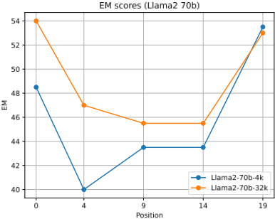
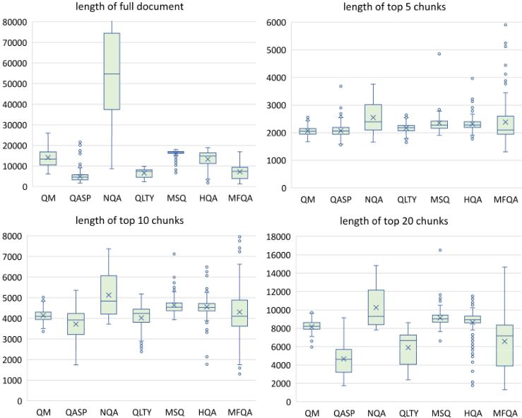

检索遇见长上下文大语言模型
论文系统比较了'检索增强'与'长上下文窗口扩展'两条技术路线在长文本任务上的效果：作者使用指令微调后的专有 43B GPT 与 Llama2-70B，通过 positional interpolation 将 4K 上下文扩展到 16K/32K，并叠加 Dragon、Contriever、OpenAI embedding 三种检索器做 top-N chunk 检索，在 7 个零样本 QA/摘要数据集和 2 个 few-shot 任务上评测。关键结论有三：一是 4K 上下文加简单检索即可达到 16K 长上下文微调模型的水平且推理计算量小得多；二是检索对任意上下文窗口大小的大模型都有显著增益（Llama2-70B-32k-ret 39.60 vs 无检索基线 37.36），修正了此前基于小模型得出的'长上下文模型不需要检索'的结论；三是检索块并非越多越好，top-5/10 通常最优，且 lost-in-the-middle 现象在 Llama2-70B 上同样存在。对需要做 RAG 与长上下文选型的工程团队是直接的决策依据。
实践者在面对带信息性 query 的长文本下游任务时，不清楚扩展 LLM 上下文窗口与检索增强（RAG）哪条路线准确率更高、计算成本更低，以及两者能否结合取得更优效果；此外，此前基于小模型（6B/7B）的研究（如 LongBench 认为长上下文模型无法从检索中获益）是否适用于大模型也存疑。
选取两个指令微调后的 decoder-only LLM（专有 NeMo GPT-43B 与 Llama2-70B，均基于 RoPE），用 positional interpolation 在 Pile 数据集上微调 1000 步（batch 128、lr 5e-6）将 4K 上下文扩展至 16K/32K；检索侧对比 Dragon、Contriever、OpenAI text-embedding-ada-002 三种 dense retriever，将文档按 300 词分块，取 top-N（5/10/20）chunk 按相关度从高到低拼入 prompt；在来自 ZeroSCROLLS 与 LongBench 的 7 个零样本数据集（单文档 QA、多文档 QA、query-based 摘要）及 2 个 few-shot 任务上系统评测，并对 Llama2-70B 做 lost-in-the-middle 现象分析。
4K 上下文 LLM 加检索即可达到 16K 长上下文微调模型相当的性能，且推理计算量小得多
Llama2-70B-4K 加检索后平均分从 31.61 提升至 35.73，GPT-43B-4K 从 26.44 提升至 29.32
检索对任意上下文长度的大模型均有增益：Llama2-70B-32k-ret 平均分 39.60，超过无检索基线的 37.36
Llama2-70B-32k-ret 在 7 个数据集平均分 44.51，超过 GPT-3.5-turbo-16k（无检索 43.60 / 检索 43.27），并在 4 个 ZeroSCROLLS 任务平均分上超过 Davinci-003
HotpotQA 上序列长度从 4k 增至 16k：Llama2-70B 从 34.64 升至 43.97，GPT-43B 从 28.91 升至 37.48，多跳任务更依赖长上下文
检索 chunk 数从 5 增至 20 并非总是有益，有时反而降低性能；各长度下最佳平均结果来自 top-5 或 top-10
GPT-3.5-turbo-4k 加检索后平均分从 37.08 提升至 41.15；few-shot 任务（Trec、SAMSum）上 Llama2-70B-32k-ret 大幅超过无检索基线与 GPT-3.5-turbo-16k
确认 lost-in-the-middle 现象在 Llama2-70B（4k 与 32k）上均存在，且长上下文模型利用 top-5 检索内容的准确率更高
首次在 43B/70B 量级指令微调大模型上做检索增强与长上下文扩展的受控对比（此前工作多用 3B/7B 小模型）；得出与同期 LongBench 工作（Bai et al., 2023）相反的结论——检索对大模型的增益与其上下文窗口大小无关，并论证小模型零样本利用检索内容能力弱是先前负面结论的原因；同时验证 lost-in-the-middle 现象在 Llama2-70B 上存在，并将检索增强的 decoder-only LLM 概念化为'由独立检索器决定稀疏模式的稀疏注意力'。
相关度级别：high
命中能力域：3.1 上下文工程与记忆 | 3.5 评测与可靠使用
理由：直接命中 3.1 上下文工程与记忆域的核心技术：论文正是 RAG/检索增强与上下文窗口管理两条路线的系统性对比，给出了'4K+检索 ≈ 16K 长上下文且更省算力''检索对任意窗口大小的大模型均有增益''top-5/10 chunk 通常最优、塞入 20 个反而可能掉分''重要信息应利用 U 型注意力放在上下文首尾'等可直接指导 RAG 系统与 prompt 上下文组织的工程结论；同时命中 3.5 评测与可靠使用域：论文在 ZeroSCROLLS/LongBench 标准基准上做零样本评测并量化成本收益，是典型的 AI 应用实证研究，为团队知识库问答、长文档处理的技术选型提供决策依据。
建议动作：深入精读并做内部分享
arXiv:2310.03025v2 [cs.CL] 2024年1月23日
检索与长上下文大语言模型的结合
Peng Xu † , Wei Ping † , Xianchao Wu, Lawrence McAfee Chen Zhu, Zihan Liu, Sandeep Subramanian, Evelina Bakhturina Mohammad Shoeybi, Bryan Catanzaro
NVIDIA
† {pengx, wping}@nvidia.com
扩展大语言模型（LLM）的上下文窗口近来日益流行，而用检索增强 LLM 的方案则已存在多年。自然而然的问题是：i) 检索增强与长上下文窗口相比，哪种方法对下游任务更有效？ii) 能否将两种方法结合起来，兼得两者之长？在本工作中，我们使用两个最先进的预训练 LLM，即一个专有的 43B GPT 和 Llama2-70B，对这两种方案进行研究，从而回答上述问题。或许令人惊讶的是，我们发现，在长上下文任务上，具有 4K 上下文窗口的 LLM 在生成时采用简单的检索增强，其性能可与通过位置插值微调得到的 16K 上下文窗口 LLM 相当，而所需计算量却少得多。更重要的是，我们证明，无论 LLM 扩展后的上下文窗口大小如何，检索都能显著提升其性能。我们最好的模型——具有 32K 上下文窗口的检索增强 Llama2-70B——在九项长上下文任务（包括问答、基于查询的摘要以及上下文小样本学习（in-context few-shot learning）任务）上的平均得分超过了 GPT-3.5turbo-16k 和 Davinci003。同时，它以明显优势超过了其不使用检索的 Llama2-70B-32k 基线，且生成速度快得多。我们的研究为从业者在 LLM 的检索增强与长上下文扩展之间的选择提供了普遍性的见解。
长上下文大语言模型（Large Language Model, LLM）近来在生产领域（如 Anthropic, 2023; OpenAI, 2023b）、研究界（如 Chen et al., 2023; Liu et al., 2023; Tworkowski et al., 2023）以及开源社区（如 Kaiokendev, 2023）中受到了大量关注。尽管由于自注意力机制在序列长度上具有二次方的时间和内存复杂度，近似注意力方法已被研究多年（如 Tay et al., 2022a），但采用精确注意力（exact attention）的长上下文 LLM 的近期进展，主要得益于配备更大显存的更快 GPU 的发展以及内存高效的精确注意力（Dao et al., 2022; Dao, 2023）。
处理长上下文的另一种长期存在的解决方案是检索（retrieval）。具体而言，LLM 只读取由独立检索器（standalone retriever）检索到的相关上下文（如 Karpukhin et al., 2020; Wang et al., 2022; Lin et al., 2023），在选取相关上下文方面，独立检索器比 LLM 更易于扩展 1，且运行速度快几个数量级。从概念上讲，检索增强的 decoder-only LLM 可以被视为在其长上下文窗口上应用稀疏注意力，其中稀疏模式并非像 Child et al. (2019) 那样预先定义，而是由独立检索器确定。换言之，未被检索到的上下文被视为无关内容，其注意力权重为零。
鉴于长上下文 LLM 研究的热度激增，以及推理 2 所需的计算量大幅增加，对于从业者而言，扩展 LLM 的上下文窗口
1 稠密嵌入检索器可以借助快速相似度搜索库（Johnson et al., 2019）轻松地从数十亿个 token 中检索上下文。
2 例如，具有 32k 上下文长度的 GPT-4 的价格是 8k 上下文模型的两倍。
1
是否比检索增强能为带有信息性查询的下游任务带来更高的准确率，目前仍不清楚。此外，如果我们能够结合两种方法的优势并取得更高的准确率，那将极具吸引力。在本工作中，我们试图通过一项全面的研究来回答上述问题。
具体而言，我们做出了以下贡献：
本文其余部分的组织结构如下。我们在第 2 节讨论相关工作，并在第 3 节介绍实验设置。我们在第 4 节报告结果，并在第 5 节对全文进行总结。
在本节中，我们讨论长上下文大语言模型（LLM）、高效注意力方法以及检索增强语言模型的相关工作。
在撰写本文稿时，我们注意到一项同期工作（Bai et al., 2023）（于2023年8月28日提交至arXiv）也研究了检索对长上下文 LLM 的影响，涉及黑盒模型 GPT-3.5-Turbo-16k（OpenAI, 2022）、白盒模型 Llama2-7B-chat-4k（Touvron et al., 2023b）以及 ChatGLM2-6B-32k（Zeng et al., 2022）。与我们的发现不同，他们发现检索仅对具有 4K 上下文窗口的 Llama2-7B-chat-4k 有帮助，而对长上下文模型（即 GPT-3.5-Turbo-16k 和 ChatGLM2-6B-32k）则没有帮助。我们推测其主要原因在于：i) 使用黑盒 API 进行受控实验具有挑战性；ii) 他们研究中使用的白盒 LLM 规模相对较小，因此其通过检索融合上下文的零样本能力有限。我们的结论则基于规模大得多的 LLM 得出。具体而言，我们最好的长上下文模型 Llama2-70B-32k 的表现与 Davinci003 和 GPT-3.5-turbo-16k 相当，同时仍可通过检索进一步提升（参见表 3）。
在以往的研究中，为应对自注意力（self-attention）的二次方复杂度——它已成为长上下文的计算瓶颈——人们提出了许多近似注意力方法（Tay et al., 2022a）。这些方法可归为以下几类：i) 采用预定义稀疏模式的稀疏注意力机制（例如 Child et al., 2019; Parmar et al., 2018; Ho et al., 2019; Beltagy et al., 2020; Zaheer et al., 2020; Zhu et al., 2021）；ii) 基于循环的方法（Dai et al., 2019; Bulatov et al., 2022）；iii) 低秩投影注意力（例如 Wang et al., 2020; Xiong et al., 2021; Tay et al., 2021; Zhu et al., 2021）；iv) 基于记忆的机制（例如 Rae et al., 2020; Liu et al., 2018）；v) 基于相似性与聚类的方法（例如 Kitaev et al., 2020; Tay et al., 2020; Roy et al., 2021）。这些近似方法引入了归纳偏置（inductive bias，例如预定义稀疏性），它能够很好地适配特定领域，但在一般的大语言模型（LLM）训练中可能会降低模型质量。
最近，FlashAttention（Dao et al., 2022; Dao, 2023）被提出，它通过考虑 GPU 存储器各层级之间的读写来加速精确注意力计算。FlashAttention 对于处理更长的序列尤为有用。
多年来，检索技术已被集成到语言模型中，用于提升困惑度（perplexity）(Borgeaud et al., 2022; Wang et al., 2023)、事实准确性 (Nakano et al., 2021)、下游任务准确率 (Guu et al., 2020; Izacard & Grave, 2021; Izacard et al., 2022; Lewis et al., 2020) 以及上下文学习（in-context learning）能力 (Huang et al., 2023)。结合独立的检索器（retriever）(Karpukhin et al., 2020; Wang et al., 2022; Lin et al., 2023)，检索增强大语言模型（retrieval-augmented LLM）在处理长文档问答和开放域问答方面已相当成熟。在以往的研究中，语言模型已在推理阶段 (Khandelwal et al., 2019; Yogatama et al., 2021)、微调阶段 (Izacard et al., 2022; Lewis et al., 2020; Guu et al., 2020) 以及预训练阶段 (Borgeaud et al., 2022; Izacard et al., 2022; Wang et al., 2023) 被引入检索加以增强。还有一些方法试图将 LLM 与检索器集成到单一模型中，构建端到端（end-to-end）的解决方案 (e.g., Jiang et al., 2022; Shi et al., 2023)。然而，除了少数近期工作 (e.g., Shi et al., 2023) 之外，以往的大多数工作主要研究针对约 100 亿参数规模 LLM 的检索增强。
在本工作中，我们聚焦于在数万亿 token 上训练、参数量为 43B 和 70B 的仅解码器（decoder-only）LLM，因为这一规模的 LLM 在经过指令微调（instruction tuning）后，展现出强大的零样本（zero-shot）上下文整合能力 (Wei et al., 2021; 2022)。
3
在本节中，我们介绍实验设置的详细信息。
我们专注于比较通过检索或大语言模型（LLM）自身的自注意力机制来整合长上下文信息、以完成生成式问答（QA）或摘要任务的零样本（zero-shot）能力。与大多数关注相对较小模型（例如 3B 或 7B）的现有工作（Kaiokendev, 2023; Nijkamp et al., 2023; Tworkowski et al., 2023; Mohtashami & Jaggi, 2023）不同，我们通过探索指令微调（instruction tuning）后参数量大于 40B 的模型规模来获得相关见解，因为先前的研究表明，当仅解码器（decoder-only）LLM 的参数量达到约 50B 时，指令微调才会变得有效（Wei et al., 2021; 2022）。
具体而言，我们用两个预训练 GPT 模型进行了实验：一个是专有的 Nemo GPT-43B，另一个是 Llama2-70B。GPT-43B 是一个 430 亿参数的模型，使用 1.1T 个 token 进行训练，其中 70% 为英文语料，其余 30% 为多语言和代码数据。在英文预训练语料方面，GPT-43B 使用了 Common Crawl 网页存档（WARC）、Wikipedia、Reddit、Books、Gutenberg、ArXiv、StackExchange、PubMed 等。该模型包含 48 层，隐藏维度为 8,192。其训练采用的序列长度为 4,096，并使用 RoPE 嵌入（Su et al., 2021）。另一个模型 Llama2-70B 是一个公开可用的 70B GPT 模型，使用约 90% 的英文数据在 2T 个 token 上进行训练。该模型包含 80 层，隐藏维度为 8,192。其上下文窗口大小同样为 4,096，并使用 RoPE 嵌入进行训练。
在本研究中，我们纳入了七个数据集，范围涵盖单文档问答（QA）、多文档问答以及基于查询的摘要生成，用于我们的零样本（zero shot）评估。具体而言，我们选取了 Scroll 基准测试（benchmark）（Shaham et al., 2022）验证集中的四个数据集。
另外三个数据集取自 LongBench（Bai et al., 2023）。
3 https://www.gutenberg.org/
4 https://anc.org/
| QM | QASP | NQA | QLTY | MSQ | HQA | MFQA | |
|---|---|---|---|---|---|---|---|
| # of samples | 200 | 1,726 | 2,000 | 2,000 | 200 | 200 | 150 |
| avg doc length | 14,140 | 4,912 | 84,770 | 6,592 | 16,198 | 13,319 | 7,185 |
| avg top-5 chunks | 2,066 | 2,071 | 2,549 | 2,172 | 2,352 | 2,322 | 2,385 |
| avg top-10 chunks | 4,137 | 3,716 | 5,125 | 4,018 | 4,644 | 4,554 | 4,305 |
| avg top-20 chunks | 8,160 | 4,658 | 10,251 | 5,890 | 9,133 | 8,635 | 6,570 |
| | QM | QASP | NQA | QLTY | MSQ | HQA | MFQA |
数据集的完整细节见表 1。可以看到，我们的评估数据集的平均文档长度范围很广，从 4.9k（QASP）到 84k（NQA）。因此，对于不带检索的基线模型，我们相应地对文档进行截断，以使其适配输入序列长度。
我们遵循官方评估指标：对 QM 报告 ROUGE 分数（即 ROUGE1/2/L）的几何平均值（Lin, 2004），对 QLTY 报告精确匹配（EM）分数，对其余五个数据集 QASP、NQA、MSQ、HQA 和 MFQA 报告 F1 分数。
我们采用位置插值方法（Chen et al., 2023）来扩展上下文窗口长度，因为该方法对于 RoPE 嵌入而言简单且有效。对于 GPT-43B，我们将其 4K 上下文窗口扩展到 16K。对于 Llama2，我们将 Llama2-7B 的 4K 上下文窗口扩展到 32k，而对 Llama2-70B 则同时扩展到 16K 和 32K 两种长度。我们遵循 Chen et al. (2023) 的做法，在 Pile 数据集（Gao et al., 2021）上对两个大语言模型（LLM）进行微调，批大小为 128，学习率为恒定的 5e-6，以适配位置嵌入。
在检索器方面，我们试验了三种检索器：1) Dragon (Lin et al., 2023)，因为它在有监督和零样本（zero-shot）信息检索基准测试（benchmark）(Thakur et al., 2021) 上均取得了最先进的结果。Dragon 是一个双编码器（dual encoder）模型，由一个查询编码器和一个上下文编码器组成。2) 广泛使用的 Contriever 模型 (Izacard et al., 2021)。Contriever 遵循 MoCo 技术 (He et al., 2020)，采用简单的对比学习框架来预训练用于信息检索的模型。它在无监督条件下进行训练，并在 BEIR 基准测试 (Thakur et al., 2021) 上的 R@100 指标中取得了与 BM25 相当的竞争性结果；以及 3) OpenAI embedding 5。对于 OpenAI embedding 模型，我们按照 OpenAI 的推荐使用最新的 'text-embedding-ada-002'。它对单个序列最多接受 8,191 个输入 token，输出向量为 1,536 维。随后计算问题与上下文列表之间的余弦相似度，用于检索排序。
为了使用这些检索器，我们首先以 300 个词为单位对每个上下文文档进行分块，然后使用相应的编码器分别对问题和所有分块进行编码。根据问题嵌入与分块嵌入的点积进行排序，选出最相关的 N 个分块，并将它们拼接在一起（按照从最相关到最不相关的从左到右顺序），作为用于生成的提示（prompt）的上下文。表 1 展示了检索得到的前 N 个分块的统计信息，而附录中的图 2 给出了全部七个数据集的 token 长度分布的更多细节。可以看到，top-5 分块都能放入 4k 序列长度（除少数离群值外），而 top-10 和 top-20 分块则能放入 16k 序列长度。
5 https://platform.openai.com/docs/guides/embeddings
5
| Model | Seq len. | Avg. | QM | QASP | NQA | QLTY | MSQ | HQA | MFQA |
|---|---|---|---|---|---|---|---|---|---|
| GPT-43B | 4k | 26.44 | 15.56 | 23.66 | 15.64 | 49.35 | 11.08 | 28.91 | 40.9 |
| + ret | 4k | 29.32 | 16.6 | 23.45 | 19.81 | 51.55 | 14.95 | 34.26 | 44.63 |
| GPT-43B | 16k | 29.45 | 16.09 | 25.75 | 16.94 | 50.05 | 14.74 | 37.48 | 45.08 |
| + ret | 16k | 29.65 | 15.69 | 23.82 | 21.11 | 47.9 | 15.52 | 36.14 | 47.39 |
| Llama2-70B | 4k | 31.61 | 16.34 | 27.7 | 19.07 | 63.55 | 15.4 | 34.64 | 44.55 |
| + ret | 4k | 36.02 | 17.41 | 28.74 | 23.41 | 70.15 | 21.39 | 42.06 | 48.96 |
| Llama2-70B | 16k | 36.78 | 16.72 | 30.92 | 22.32 | 76.1 | 18.78 | 43.97 | 48.63 |
| + ret | 16k | 37.23 | 18.7 | 29.54 | 23.12 | 70.9 | 23.28 | 44.81 | 50.24 |
| Llama2-70B | 32k | 37.36 | 15.37 | 31.88 | 23.59 | 73.8 | 19.07 | 49.49 | 48.35 |
| + ret | 32k | 39.6 | 18.34 | 31.27 | 24.53 | 69.55 | 26.72 | 53.89 | 52.91 |
| Llama2-7B | 4k | 22.65 | 14.25 | 22.07 | 14.38 | 40.9 | 8.66 | 23.13 | 35.2 |
| + ret | 4k | 26.04 | 16.45 | 22.97 | 18.18 | 43.25 | 14.68 | 26.62 | 40.1 |
| Llama2-7B | 32k | 28.2 | 16.09 | 23.66 | 19.07 | 44.5 | 15.74 | 31.63 | 46.71 |
| + ret | 32k | 27.63 | 17.11 | 23.25 | 19.12 | 43.7 | 15.67 | 29.55 | 45.03 |
| Model | Seq len. | Avg. | QM | QASP | NQA | QLTY | MSQ | HQA | MFQA |
为了训练预训练的大语言模型（LLM）遵循指令完成问答或文本摘要任务，我们还进行了指令微调（instruction tuning）。我们首先构建了一个指令微调数据集的混合集，其中包含来自 Soda 数据集（Kim et al., 2022）、ELI5 数据集（Fan et al., 2019）、FLAN 数据集（Wei et al., 2021）、Open Assistant 数据集（Köpf et al., 2023）、Dolly（Conover et al., 2023）以及一个专有来源的对话数据集的 102K 个训练样本，以使所有基础模型适应遵循指令。在模板方面，我们使用 "System: {System}\n\nUser: {Question}\n\nAssistant: {Answer}" 作为格式，以支持多轮对话训练。由于所有任务在推理时都包含需要据此进行推理的上下文信息，我们将上下文添加到对话之前，即 "System: {System}\n\n{Context}\n\nUser: {Question}\n\nAssistant: {Answer}"。
我们仅在 {Answer} 部分上计算损失来微调 LLM，批大小为 128，学习率为 5e-6，共训练 1000 步。在本文的其余部分，所有结果均基于在基础模型 GPT-43B、Llama2-7B 和 Llama2-70B 之上进行指令微调的对话模型进行报告。
在本节中，我们报告结果并提供详细分析。
在表2中，我们使用GPT-43B和Llama2-70B比较了上下文长度从4K到长达32K的不同模型变体。首先，我们发现对于GPT-43B和Llama2-70B而言，不进行检索的4k序列长度基线模型取得了最差的结果。这是因为所有七个任务的最小平均序列长度都超过了4096（即基础模型的上下文窗口），因此有价值的文本会被随机截断。因此，检索对4K大语言模型（LLM）尤其有帮助，例如Llama2-70B-4K从31.61提升到35.73，而GPT-43B-4K从26.44提升到29.32。其次，我们观察到HotpotQA（HQA）尤其偏好长序列模型：当序列长度从4k增加到16k时，Llama2-70B的分数从34.64提升到43.97，GPT-43B的分数从28.91提升到37.48。这是因为HotpotQA是一个多跳数据集，其中的问题并不难回答，但所有中间跳都是获得正确答案所必需的。因此，长上下文有助于提高纳入所有中间跳的召回率。
6

| Model | Avg-7 | Avg-4* | QM* | QASP* | NQA* | QLTY* | MSQ | HQA | MFQA |
|---|---|---|---|---|---|---|---|---|---|
| Davinci003 (175B) | 39.2 | 40.8* | 16.9* | 52.7* | 24.6* | 69.0* | 22.1 | 41.2 | 47.8 |
| GPT-3.5-turbo (4k) +ret | 38.4 | 39.2* | 15.6* | 49.3* | 25.1* | 66.6* | 21.2 24.4 | 40.9 49.5 | 49.2 49.5 |
| GPT-3.5-turbo-16k +ret | 42.8 | 42.4 | 17.6 | 50.5 | 28.8 | 72.6 | 26.9 30.4 | 51.6 46.6 | 52.3 52.8 |
| Llama2-70B-32k | 40.9 | 42.4 | 15.6 | 45.9 | 28.4 | 79.6 | 19.1 | 49.5 | 48.4 |
| Llama2-70B-32k-ret | 43.6 | 43.0 | 18.5 | 46.3 | 31.5 | 75.6 | 26.7 | 53.9 | 52.9 |
| Model | Avg-7 | Avg-4* | QM* | QASP* | NQA* | QLTY* | MSQ | HQA | MFQA |
表3：我们最佳的检索增强模型Llama2-70B-32k-ret与GPT-3.5-turbo-16k和Davinci-003（175B参数）的比较。对于QMSum（QM）、Qasper（QASP）、NarrativeQA（NQA）和QuALITY（QLTY），我们使用了ZeroSCROLLS排行榜上的测试集，因为组织者已经给出了GPT-3.5-turbo（4k）和Davinci-003的分数（以*标示）。Avg-7指所有7个数据集的平均分数，Avg-4*指ZeroSCROLLS中4个数据集的平均分数。
非常有趣的是，检索增强的长上下文LLM（例如16K和32K）能够获得比检索增强的4K上下文LLM更好的结果，即使为它们提供的是相同的top 5证据块。我们假设这一有趣的观察与"lost in the middle"（中间丢失）现象（Liu et al., 2023）有关，即LLM具有这种“U形”性能曲线。具体而言，LLM更善于利用出现在其输入上下文窗口开头或结尾的相关信息。为了进一步验证这一假设，我们参照Liu et al.（2023）的方法，对Llama2-70B-4k和Llama2-70B-32k开展了"lost-in-the-middle"（中间丢失）研究。如图1所示，我们确认该现象也存在于具有不同上下文长度的Llama2-70B中。特别是，Llama2-70B-4k与Llama2-70B-32k曲线的对比表明，长上下文模型在纳入top-5检索上下文方面具有更高的准确率。
值得注意的是，我们的观察与 LongBench 工作（Bai et al., 2023）得出的结论有很大不同：“检索能为长上下文能力较弱的模型带来提升，但其性能仍落后于具有较强长上下文理解能力的模型”。在这里，我们证明检索能够显著提升 GPT-43B 和 Llama2-70B 的性能，而无论其上下文窗口大小如何。例如，我们最佳的检索增强模型 Llama2-70B-32k-ret 以明显优势超越其无检索基线，即 39.60 对 37.36。我们认为得出如此不同结论的主要原因是，Bai et al. (2023) 使用的是参数量为 6B 和 7B 的小得多的 LLM，这类模型在融合检索到的分块上下文方面通常具有相对较差的零样本（zero-shot）能力。为进一步验证这一假设，我们还在表 5 中报告了使用 Llama2-7B 的结果。实际上，可以得出与 Bai et al. (2023) 类似的结论。我们认为其根本原因在于：i) 对于 Llama2-7B-chat-4k，其较短的上下文长度是长上下文任务的瓶颈，因此检索增强大幅提升了结果；ii) 对于 Llama2-7B-chat-32 和 ChatGLM2-6B-32k，上下文长度的瓶颈已基本消除，但由于模型规模较小，其检索增强模型在融合检索到的上下文分块方面的零样本能力有限。因此，检索对 Llama2-7B-32k 和 ChatGLM2-6B-32k 都没有帮助，这与我们情况下 Llama2-70B-32k 这类大型 LLM 的表现不同。
7
| Seq len | Setting | Avg. | QM | QASP | NQA | QLTY | MSQ | HQA | MFQA |
|---|---|---|---|---|---|---|---|---|---|
| 4k | baseline (w/o ret) | 31.61 | 16.34 | 27.7 | 19.07 | 63.55 | 15.4 | 34.64 | 44.55 |
| Dragon | 35.73 | 18.14 | 29.2 | 23.39 | 70.3 | 20.09 | 41.54 | 47.45 | |
| Contriever | 36.02 | 17.41 | 28.74 | 23.41 | 70.15 | 21.39 | 42.06 | 48.96 | |
| OpenAI-embedding | 35.79 | 17.76 | 28.85 | 23.57 | 70.7 | 19.92 | 41.76 | 47.99 | |
| 32k | baseline (w/o ret) | 37.36 | 15.37 | 31.88 | 23.59 | 73.8 | 19.07 | 49.49 | 48.35 |
| Dragon | 39.6 | 18.34 | 31.27 | 24.53 | 69.55 | 26.72 | 53.89 | 52.91 | |
| Contriever | 38.85 | 17.6 | 31.56 | 23.88 | 69 | 26.61 | 49.65 | 53.66 | |
| OpenAI-embedding | 39.34 | 18.24 | 32.07 | 24.36 | 69.45 | 24.9 | 51.64 | 54.75 |
| Seq len | Setting | Avg. | QM | QASP | NQA | QLTY | MSQ | HQA | MFQA |
| Seq len | Setting | Avg. | QM | QASP | NQA | QLTY | MSQ | HQA | MFQA |
|---|---|---|---|---|---|---|---|---|---|
| 4k | base | 31.61 | 16.34 | 27.7 | 19.07 | 63.55 | 15.4 | 34.64 | 44.55 |
| top-5 | 35.73 | 18.14 | 29.2 | 23.39 | 70.3 | 20.09 | 41.54 | 47.45 | |
| top-10 | 34.62 | 16.54 | 28.67 | 24.38 | 68.7 | 19 | 42.18 | 42.84 | |
| top-20 | 34.61 | 16.52 | 28.67 | 24.38 | 68.7 | 19 | 42.18 | 42.84 | |
| 16k | base | 36.78 | 16.72 | 30.92 | 22.32 | 76.1 | 18.78 | 43.97 | 48.63 |
| top-5 | 37.23 | 18.7 | 29.54 | 23.12 | 70.9 | 23.28 | 44.81 | 50.24 | |
| top-10 | 38.31 | 18.41 | 30.2 | 25.53 | 73.6 | 22.78 | 47.72 | 49.91 | |
| top-20 | 36.61 | 17.26 | 29.6 | 25.81 | 72.3 | 22.69 | 41.36 | 47.23 | |
| 32k | base | 37.36 | 15.37 | 31.88 | 23.59 | 73.8 | 19.07 | 49.49 | 48.35 |
| top-5 | 39.6 | 18.34 | 31.27 | 24.53 | 69.55 | 26.72 | 53.89 | 52.91 | |
| top-10 | 38.98 | 17.71 | 30.34 | 25.94 | 70.45 | 22.8 | 55.73 | 49.88 | |
| top-20 | 38.38 | 16.36 | 30.42 | 24.42 | 69.6 | 24.51 | 54.67 | 48.65 |
| Seq len | Setting | Avg. | QM | QASP | NQA | QLTY | MSQ | HQA | MFQA |
相比之下，像 Llama2-70B 这样规模更大的指令微调 LLM 具有强得多的零样本能力来融合检索到的证据。当比较 GPT-43B 与 Llama2-70B 之间检索增强带来的增益时，这一观察变得更加清晰：Llama2-70B 通过检索融合上下文获得了更大的收益。
为了进一步了解我们最好的模型（即通过检索增强的 Llama2-70B-32k）有多好，我们还在那七个数据集上将其与 GPT-3.5-turbo(4k)、GPT-3.5-turbo-16k 和 Davinci-003 进行了比较。6 我们发现，Llama2-70B-32k-ret 在七个数据集的平均准确率方面取得了优于 GPT-3.5-turbo-16k 的结果，同时在 4 个任务的平均值上优于 Davinci-003（175B 参数）。这表明带检索的 Llama2-70B-32k 是这些长上下文任务的强大模型，并且我们的结论建立在最先进的结果之上。
我们还报告了 GPT3.5-turbo 在 MSQ、HQA 和 MFQA 上的检索增强结果。对于 GPT3.5-turbo-4k，检索显著提升了性能（平均值从 37.08 提升到 41.15）。对于 GPT3.5-turbo-16k，检索（43.27）与非检索（43.60）的平均分数彼此接近，且都低于我们的 Llam2-70B-32k-ret 结果（44.51）。请注意，GPT3.5turbo-16k 是一个黑盒 API，我们不知道它是如何实现的、其模型规模以及任何预处理步骤。
6 对于 QMSum (QM)、Qasper (QASP)、NarrativeQA (NQA)、QuALITY (QLTY)，我们使用了 ZeroSCROLLS 排行榜上的测试集，因为组织者已在其中准备了 GPT-3.5-turbo (4k) 和 Davinci-003 的分数。
| Model | Trec | SAMSum |
|---|---|---|
| GPT-3.5-turbo-16k | 68 | 41.7 |
| Llama2-70B | 73 | 46.5 |
| Llama2-70B-ret | 76 | 47.3 |
| Model | Trec | SAMSum |
表 6：在来自 LongBench 的两个少样本学习任务上，Llama2-70B 与 GPT-3.5-turbo-16k 的比较。检索对少样本学习同样有帮助。
为了研究不同检索器对 Llama2-70B 的影响，我们在 Llama2-70B-4k 和 Llama2-70B-32k 之上比较了 Dragon、Contriever 和 OpenAI 嵌入。表 4 中的结果证实了我们的发现，即检索能够提升短上下文和长上下文大语言模型（LLM）的性能，这一结论在不同的检索器上均保持一致。
为了研究向上下文中添加更多检索块（retrieved chunks）所产生的影响，我们使用 Dragon 检索器将检索块的数量从 5 增加到 20，结果见表 5。我们观察到，对于不同的序列长度，最佳平均结果要么来自 top 5，要么来自 top 10。即使 20 个检索块仍然能够放入 16K 和 32K 的上下文窗口（如图 2 所示），将检索块数量增加到 20 也并无帮助，有时反而会损害性能。我们认为这可能与“lost in the middle”（迷失在中间）现象（Liu et al., 2023）有关，或者是模型被无关信息分散了注意力，因此这一问题有待进一步研究。
除了上文提到的基于查询的摘要任务和问答任务等零样本（zero-shot）任务之外，我们进一步利用来自 LongBench 的两个额外数据集（Trec 和 SAMSum），研究长上下文模型在少样本（few-shot）任务上的收益。我们将每个数据集中的问题作为查询，并用它来检索给定少样本示例中所提供的相关问答（QA）对。表 6 显示，我们最佳的模型 Llama2-70B-32k-ret 以较大优势超过了其非检索版本的 Llama2-70B-32k 基线以及 GPT-3.5-turbo-16k。这再次证实了将检索与长上下文模型结合使用所带来的收益。
在本工作中，我们使用经过指令微调（instruction tuning）的最先进大语言模型（LLM），针对多种长上下文问答（QA）和基于查询的摘要任务，系统地研究了检索增强与长上下文扩展的对比。经过研究，我们得到以下有趣的发现：i) 检索大幅提升了 4K 短上下文 LLM 和 16K/32K 长上下文 LLM 的性能。ii) 采用简单检索增强的 4K 上下文 LLM 可以取得与 16K 长上下文 LLM 相当的性能，同时推理效率更高。iii) 在进行上下文窗口扩展和检索增强之后，最佳模型 Llama2-70B-32k-ret 在一组带有信息性查询的下游任务上的平均得分方面可以超过 GPT-3.5-turbo-16k 和 Davinci003。我们的研究揭示了将检索与长上下文技术相结合以构建更好的 LLM 这一有前景的方向。
从这项工作中可以延伸出许多潜在的研究方向。其中一个方向是为现有的预训练大语言模型（例如 Llama2-70B）开发先进的方法（例如记忆机制或分层注意力），这本身并非易事。此外，将上下文窗口进一步扩展到 64k 甚至更长，对于 70B 参数量的大型模型而言将是一项非常有趣的研究，尽管预训练更长的序列需要多得多的计算量。最后，如何缓解"lost-in-the-middle"（迷失在中间）现象是一个开放的研究课题，而使用 UL2 损失（Tay et al., 2022b）进行继续预训练可能是一种潜在的解决方案。
| 0 | 1 |
|---|---|
| Chunk 1 | On September 18, 2015, the deluxe edition of the album was released containing live and instrumental tracks from the standard edition album, in addition to the single "Light" featuring Little Dragon. Critical recep- tion ... Angelspit has toured with Angel Theory, Ayria, Ikon, KMFDM, Tankt and The Crüxshadows, and have also shared the stage with bands such as The Sisters of Mercy, Nitzer Ebb, Skinny Puppy and Front Line Assembly. They performed with Lords of Acid during a 22-date U.S. tour in March 2011 and toured the United States with Blood on the Dance Floor in October 2011 . History Karl Learmont (ZooG) and Amelia Tan (Destroyx) met on an online zine forum. They shared an interest in zines and started the distro Vox Populis in 2002. |
| Chunk 2 | They then started making zines for themselves which became the lyrical inspiration for releases to follow. Angelspit was formed in 2003, and the duo then self-released their debut EP, Nurse Grenade on 3 October 2004. ... A video for the remix of "Sleep Now" was released on 2 October 2010. They released their third remix album, Carbon Beauty on 8 March 2011. This new remix album contains 3 new tracks as well as 10 remixes of tracks from the Hideous and Perfect album. A video for "Toxic Girl" was released on 13 April 2011, and a video for "Like It? |
| Chunk 3 | Passage 1: Blood on the Dance Floor (band) Blood on the Dance Floor was an American electronic music group from Orlando, Florida, formed in 2006. The group's longest standing lineup, from 2009 to 2016, consisted of Jesus David Torres also known as Dahvie Vanity (born 1984) and Jayy Von Monroe (born 1991). ... The CD was self-released in October 2008. Only 300 copies were made.Vanity and Ecstasy recorded the singles "Siq With a Q" and "Suicide Club" as a duo in 2008, and released three extended plays over the first half of 2009, I Scream I Scream, OMFG Sneak Peak, and Extended Play. |
| Chunk 4 | title: , source: Lick It!" was released on 27 July 2011. On 15 April 2011, Angelspit announced the addition of three new members: guitarist Valerie Gentile (Black Tape for a Blue Girl, The Crüxshadows), drummer Chris Kling (Hanzel und Gretyl, Mortiis) and videojammer The Liar. The new line-up of Angelspit released their fourth studio album, Hello My Name Is on 11 October 2011. Matt James replaced Chris Kling in early 2012, and former Crüxshadows guitarist George Bikos filled in for Valerie Gentile on the band's 2012 tour... |
| Chunk 5 | Vanity denied these allegations in a video.In April 2017, Vanity an- nounced that there would be a new member, and that Blood on the Dance Floor would be returning on May 5 of that year without Jayy Von Mon- roe. ... On January 1, 2021, Vanity released a new version of Blood on the Dance Floor's "Bewitched" as "Bewitched Reimagined" featuring singer Sammy Beare. As of 2016, Jayy Von Monroe has continued to work as a drag monster under the name "The Dahli" and Vanity has continued to release music and merchandise by himself under both "The Most Vivid Nightmares" and "Dark Arts Official". |
| Question: | Angelspit toured the United States with an American electronic music duo from Orlando, Florida, that formed in what year? |
| LLaMA2-7b-32k | Angelspit toured the United States with Blood on the Dance Floor in October 2011. |
| LLaMA2-7b-32k-ret | Angelspit toured the United States with Blood on the Dance Floor in October 2011. |
| LLaMA2-70b-32k LLaMA2-70b-32k-ret | 2011 |
| Ground truth | 2006 2006 |
| 0 | 1 |
15

16